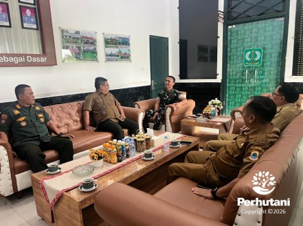

BANTEN, PERHUTANI (23/01/2026) │ Perhutani Kesatuan Pemangkuan Hutan (KPH) Banten menjalin sinergi melalui koordinasi kewilayahan lintas sektoral bersama Komando Distrik Militer (Kodim) 06/03 Lebak dan Dinas Koperasi dan UKM Kabupaten Lebak. Kegiatan ini dilaksanakan dalam rangka mendukung Program Strategis Nasional (PSN) pembangunan Koperasi Desa Merah Putih (KDMP) yang digagas Pemerintah Kabupaten (Pemkab) Lebak, bertempat di Markas Kodim 06/03 Lebak, Kamis (22/01).
Rapat koordinasi tersebut dihadiri oleh Administratur Perhutani KPH Banten Dadan Ginanjar, Wakil Administratur KPH Banten sekaligus Koordinator Keamanan (Korkam) Rudi Hartawan, Kepala Seksi Sub Sistem (KSS) Hukum, Kepatuhan Agraria dan Komunikasi Perusahaan Adang Mulyana, Komandan Kodim 06/03 Lebak Letnan Kolonel Infanteri I Gede Mahendra Subrata, serta Kepala Dinas Koperasi dan UKM Kabupaten Lebak Imam Suangsa beserta jajaran.
Agenda rapat difokuskan pada pembahasan kesiapan lahan dan pemenuhan aspek legalitas dalam rencana pembangunan sarana dan prasarana Koperasi Desa Merah Putih (KDMP).
Administratur Perhutani KPH Banten Dadan Ginanjar menyampaikan pentingnya sinergi kewilayahan lintas sektoral bersama aparat dan pemangku kepentingan di wilayah Kabupaten Lebak. Ia juga mengapresiasi langkah koordinatif Pemkab Lebak dalam persiapan program tersebut.
"Perhutani siap mendukung pembangunan Koperasi Desa Merah Putih sebagai upaya penguatan ekonomi masyarakat desa hutan. Namun, setiap pemanfaatan kawasan hutan harus tetap mengacu pada regulasi yang berlaku guna menjaga kelestarian hutan dan tata kelola sumber daya hutan," ujarnya.
Sebagai tindak lanjut hasil rapat koordinasi tersebut, Perhutani KPH Banten akan melakukan koordinasi dengan pemerintah desa, pemerintah kecamatan, serta Pemerintah Kabupaten Lebak untuk memastikan status lahan dan proses perizinan pemanfaatan kawasan hutan sesuai dengan ketentuan peraturan perundang-undangan.
Ia berharap sinergi antara Perhutani KPH Banten, Kodim 06/03 Lebak, dan Pemerintah Kabupaten Lebak dapat terus terjalin. "Semoga ke depan kolaborasi ini dapat terus ditingkatkan dalam berbagai kegiatan positif yang bermanfaat bagi kelestarian hutan dan kesejahteraan masyarakat desa sekitar hutan," pungkasnya.
Sementara itu, Kepala Dinas Koperasi dan UKM Kabupaten Lebak Imam Suangsa menyampaikan bahwa program pembangunan KDMP merupakan upaya penguatan ekonomi berbasis kemasyarakatan di wilayah pedesaan yang membutuhkan dukungan lintas sektoral.
"Keberhasilan Koperasi Desa Merah Putih sangat ditentukan oleh dukungan dan sinergi Pemerintah Daerah, TNI, Polri, instansi terkait, stakeholder, serta masyarakat. Dalam pelaksanaannya, program ini tetap mengedepankan aspek legalitas, tata ruang, serta kelestarian hutan dan lingkungan," terangnya.
Komandan Kodim 06/03 Lebak Letnan Kolonel Infanteri I Gede Mahendra Subrata menambahkan bahwa pembangunan Koperasi Desa Merah Putih merupakan bagian dari Program Strategis Nasional sebagaimana diatur dalam Instruksi Presiden Nomor 17 Tahun 2025. Dalam pelaksanaannya, setiap unit KDMP membutuhkan lahan sekitar ±1.000 meter persegi untuk pembangunan kantor dan sarana usaha.
"Untuk memenuhi kebutuhan lahan tersebut, kami menjalin koordinasi dengan Pemerintah Kabupaten Lebak dan instansi terkait melalui pemanfaatan aset pemerintah desa, pemerintah daerah, BUMN, kehutanan, maupun sumber lainnya yang dapat mendukung kelancaran program KDMP," jelasnya.
Ia berharap dukungan seluruh pihak dalam pelaksanaan program tersebut. "Kami berharap sinergi lintas sektoral ini terus terjaga demi mendukung keberhasilan Program Strategis Nasional dan kemajuan bersama di Kabupaten Lebak," pungkasnya.
Editor: WK
Copyright © 2026 Warta Nusantara Barat